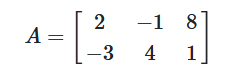
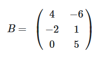
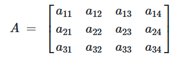
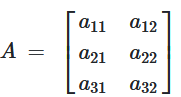
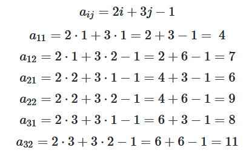
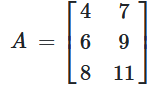

Matriz
Hablilidade EM13MAT301
Sobre a Habilidade
Resolver e elaborar problemas do cotidiano, da Matemática e de outras áreas de conhecimento, que envolvem equações lineares simultâneas, usando técnicas algébricas e gráficas, com ou sem apoio de tecnologias digitais.
Resumo
Uma matriz é uma tabela organizada em linhas e colunas que pode ser usada para representar um sistema de equações lineares. As operações com matrizes, como adição, multiplicação e inversão, são fundamentais para a resolução de sistemas lineares, especialmente em problemas de maior complexidade. Além disso, as matrizes têm aplicações em computação gráfica, modelagem de redes de computadores, algoritmos de aprendizado de máquina e até na física, como na representação de transformações lineares em espaços vetoriais.
Detalhes
A matriz é uma representação de dados, geralmente numéricos, divididos por linhas e colunas. Uma matriz é representada da forma Amxn. Assim, temos a matriz A, que possui m linhas e n colunas. A matriz M3x2, por exemplo, possui três linhas e duas colunas. A matriz contém termos representados por aij, em que i é a linha que o termo ocupa e j é a coluna que o termo ocupa.
Existem casos especiais de matriz, como a matriz linha, a matriz coluna, a matriz quadrada, a matriz oposta e a matriz identidade. Podemos realizar operações importantes com as matrizes, como adição, subtração e multiplicação. Na informática, matrizes são essenciais para o desenvolvimento da programação. A matriz é utilizada para facilitar o trabalho com dados numéricos, separando determinadas informações de tabelas por linhas e colunas.
Representação da Matriz
Para representar uma matriz, é importante entendermos sua notação. Uma matriz é representada por letras maiúsculas seguidas do índice da matriz.
Amxn
A → representação da matriz, que nesse caso é matriz A
m → número de linhas da matriz A
n → número de colunas da matriz A
Vejamos alguns exemplos a seguir para compreendermos melhor o assunto.
- Exemplo 1:
Essa é uma matriz 2x3, pois possui 2 linhas e 3 colunas. Logo, podemos dizer que ela é a matriz A2x3 ou então que essa é uma matriz de ordem 2 por 3.
 - Exemplo 2:
Essa é uma matriz 3x2, pois ela possui 3 linhas e 2 colunas. Logo, podemos dizer que essa é a matriz B3x2.

Importante: Observe que a matriz pode ter os seus dados tanto entre colchetes quanto entre parênteses.
Elementos da Matriz
Os elementos da matriz são conhecidos também como termos da matriz. Para representar seus elementos, utilizamos letras minúsculas seguidas do índice que representa a posição da matriz. Na notação aij, i é a linha e j é a coluna. O termo a11, por exemplo, é o termo que ocupa a primeira linha e a primeira coluna da matriz A. O termo b34 é o elemento que ocupa a terceira linha e quarta coluna da matriz B. Podemos fazer a representação da matriz de forma algébrica, levando em consideração esses temos.- Exemplo: Representando de forma algébrica a matriz A3x4:

Como calcula?
A matriz, em alguns casos, pode possuir uma lei de formação, que é uma fórmula que relaciona o valor do termo à sua posição.
- Exemplo:
Dada a matriz A3x2, com lei de formação aij=2i+3j−1, encontre a matriz A:
Resolução: De início, representaremos essa matriz de forma algébrica:

Agora, encontraremos cada um dos seus termos utilizando a lei de formação, substituindo nela o valor de i e o valor de j pela linha e pela coluna à qual o termo pertence.

Então, a matriz A é:
